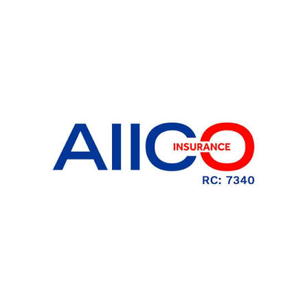
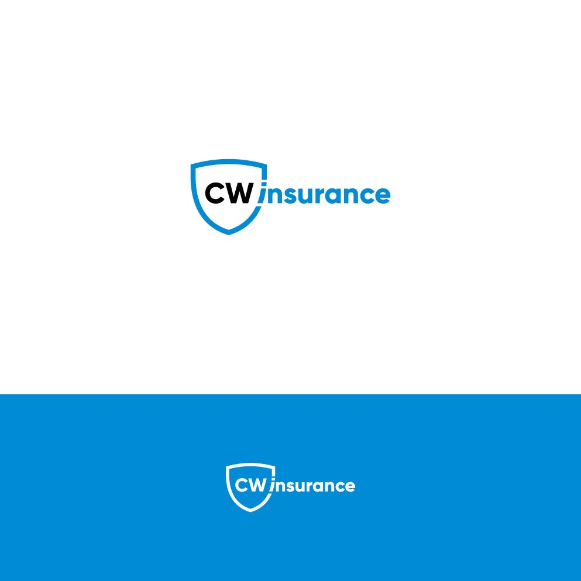

Compassion. Expertise.
Better Health.
Vital Care brings together leading specialists, modern diagnostics, and calm, patient-first care — so every visit feels like it's in safe hands.
0+
Years of trusted service
0+
Expert physicians
0+
Patients cared for
0
Specialist departments
Two quick tools to point you in the right direction
Symptom Checker
Select what you're experiencing and we'll suggest a department to start with.
Open the full symptom checker →
This tool is not a medical diagnosis. In an emergency, call our hotline immediately.
Find the Right Specialist
Tell us your general concern and we'll recommend where to book.
Care built around you, not around the system
Every design decision here — from wait times to how results are explained — starts with the patient's experience.
Board-certified specialists
Every physician is credentialed and continually trained on the latest clinical standards.
Modern diagnostics
Digital imaging and lab technology built for accuracy and fast results.
Unhurried consultations
Appointments are paced so your questions get real answers, not a rushed goodbye.
24/7 emergency care
Our emergency department and ambulance line are staffed around the clock.
Specialist care under one roof
Meet a few of our specialists
What to expect, step by step
Book
Choose a doctor and time online.
Consult
Meet your specialist in person.
Diagnose
Get clear answers from testing.
Treat
Follow a plan built around you.
Recover
Supported rest and rehabilitation.
Follow Up
We check in, so nothing is missed.
We work with your coverage


Health tips, straight to your inbox
One helpful email a month. No spam, unsubscribe anytime.